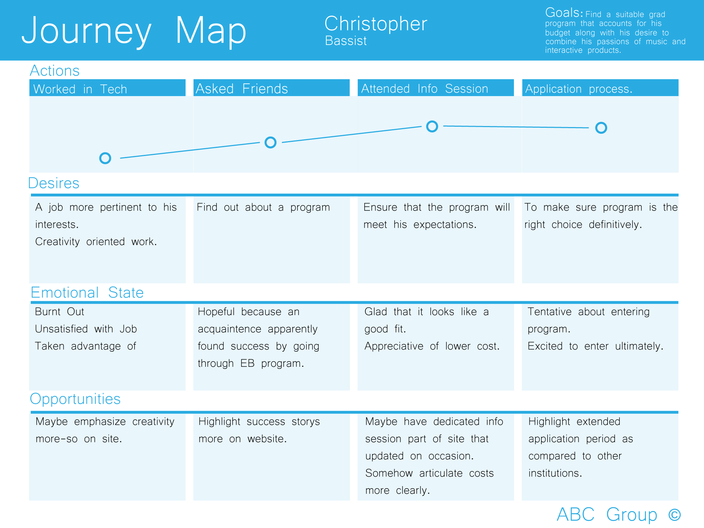

CSU East Bay
Multimedia Site Redesign

Background
I participated in a redesign of the CSU East Bay multimedia graduate program website over the course of a few weeks, in a team of 4. This was an opportunity to tackle some of the real-world problems users were having with the site, along with a means of figuring out if there were opportunities for new additions.
Process
Defining the Problem
During the process, I had the chance to interview a mix of different users who had all used the site at one point or another. This was comprised of a graduate student in their final year of the program, a student new to the program, and a student who planned to enter the program. This gave our team a great way of gaining perspective for use cases that touched on all possible points of contact in the site ecosystem.
From the interviews, I learned that there were a lot of great things being done in the program that the interviewees felt were not reflected by the site. This is with regard to the works students have developed, campus events, and curriculum.
From this, our team defined several key goals that we wanted the application to achieve:
Give a heightened focus to student work
The experience should highlight student works. Students want a clear picture of what it is they will be able to achieve by attending this program. Currently self-contained on the site expresses this aspect of the program, and the external offerings are dated.Provide better means of keeping tabs on campus events.
The program currently offers a robust guest speaker series, along with a regular series of Information Sessions for those interested in entering the program. These are both integral to prospective students moving toward applying to the school.Highlight educational outcomes
Apart from seeing the output of what students can achieve in project form, students will need clear articulation of what will attribute to this, by knowing what exactly they will be learning and in what order. The current paragraph clutter takes away from clarity in this area.

Journey Map of First Year Student
Journey Map of Second Year Student
Research
Our team decided to perform a competitive analysis on a few other sites, particularly focused on how they related to our key goals.

Other interaction design graduate websites.
We noticed that these sites had clearly defined flows for users to access desired content, something less clear on our site’s current conflicting navigational elements. Using Jacob Nielsen's 10 Heuristics of Usability, we did a deep-dive into the CSU East Bay multimedia site and compiled a list of usability violations. The chart below captures the highest-priority issues encountered, the heuristic that was violated, and a metric of its severity to the user.
The most pressing usability violations of the CSUEB Multimedia Site.
The highest rated issues were problems that served to undermine the validity of the program. Confusion in site navigation is indicative of what navigating the actual student experience may be like, and so it was clear that this needed to be acted upon first and foremost. With all of this information, my team and I brainstormed and developed a clearly defined navigational experience for users. After wireframing, we came up with a solid prototype for the site.
Solutions
Final Prototype Home Page
We created clearly defined tracks for what we found to be the most important avenues of site progression. This approach helped to circumvent any confusion experienced by the conflicting navigational elements present in the initial design. On top of this, we acted on some of the initial findings from the user interviews and competitive analysis.
Example of a student project page
Example of an event page
We created straightforward user flows for both scheduling events on campus into Google calendar, and also for viewing student project content. We used a unified method that allows for a page overlay that allows for the completion of the desired task, followed by an easy way of getting back to the rest of the event / project listings.
Takeaways
From this experience, I learned some important lessons that I can apply to future projects.